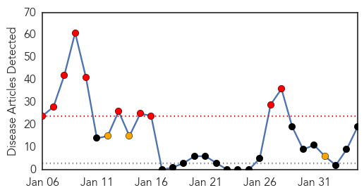

30 Day Trends
Web: 10 alerts, 3 warnings
Twitter: 1 alerts, 0 warnings
Top Articles:
- 0.999
- what is H7N9 bird flu?
- 0.998
- New strain of 'deadly' bird flu
- 0.997
- First death from new bird-flu strain fuels fears of pandemic
- 0.997
- AAFP, CDC, Other Groups Reiterate Call to Immunize Pregnant Patients
- 0.996
- Scientists talk of 'pandemic potential' after first confirmed human death from new strain of bird flu
- 0.992
- With Death Toll Rising, Flu Shot Is Still Best Defense
- 0.986
- Chinese scientists sound warning over new bird flu
- 0.978
- More people getting shots, more dying from flu in Northern California
- 0.975
- New China bird flu a reminder of mutant virus risk
- 0.966
- Doctors warn of pandemic potential of the new H10N8 bird flu virus
- 0.962
- Five-Year-Old Boy First Bird Flu Case of 2014
- 0.950
- New bird flu virus claims world’s first human victim
- 0.931
- Made for China? Research Says H7N9 Flu Virus Confined Only to Chinese
- 0.847
- Ten new H7N9 cases push outbreak total past 300
- 0.667
- Thousands of unvaccinated adults die each year from preventable diseases
- 0.632
- New Mexico Department of Health says doctor visits for flu are decreasing
- 0.564
- Spanish flu, the pandemic that killed 50 million, started in China — but may have spread via Canada, historian says
- 0.557
- History’s worst epidemic started in China and spread via Canada, researcher contends
- 0.517
- China human H7N9 avian flu toll reaches 25
Top Tweets:
-
No tweets found for Feb 04, 2014
Web/News Articles
Tweets